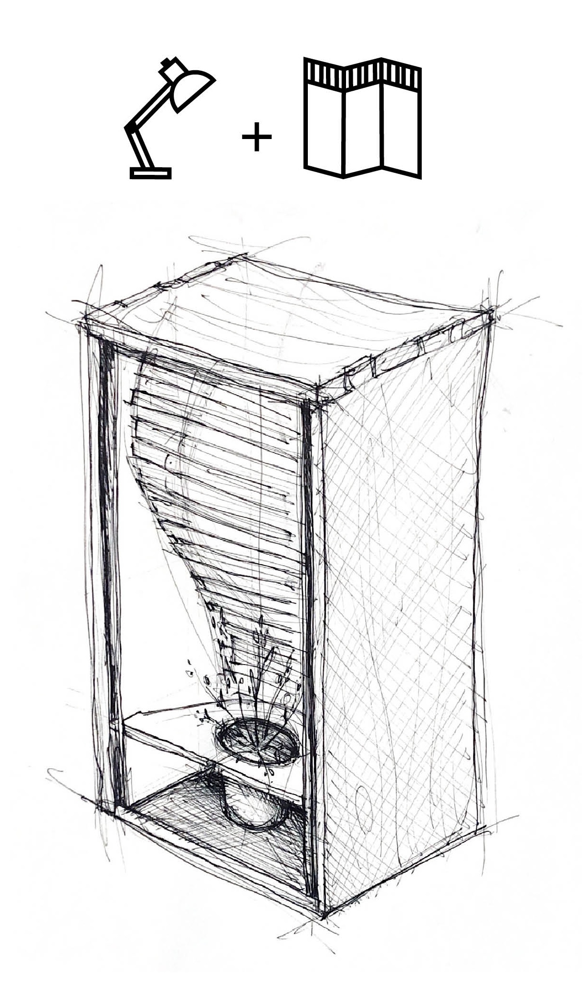
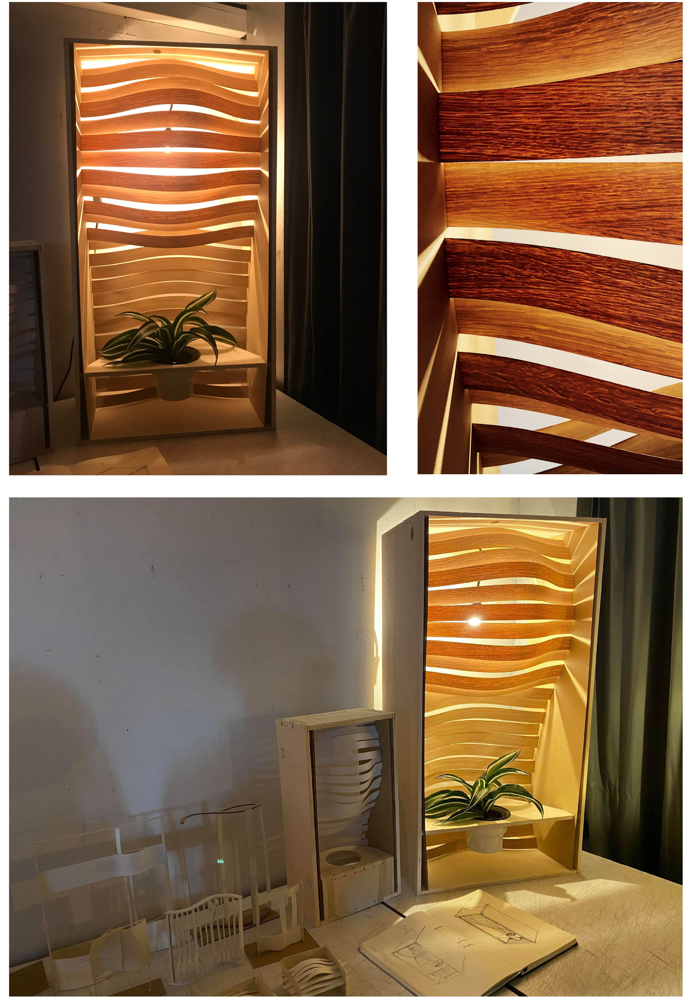
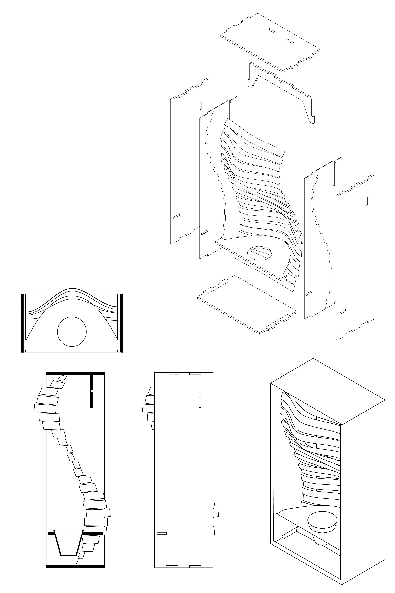
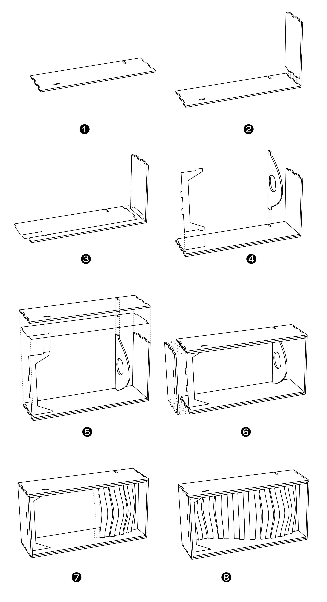

Projet de fabrication d’une lampe
Ce projet de fabrication explore la relation entre matérialité, lumière et processus numérique, à travers la conception d’une lampe pensée comme un objet à la fois fonctionnel et spatial.
La forme intérieure, composée d’éléments répétés, filtre la lumière et produit un effet de profondeur tout en révélant la logique constructive de l’objet.
Le projet met ainsi en valeur les possibilités de conception, de fabrication et d’assemblage offertes par les outils numériques, dans une approche attentive aux qualités sensibles de l’objet.


